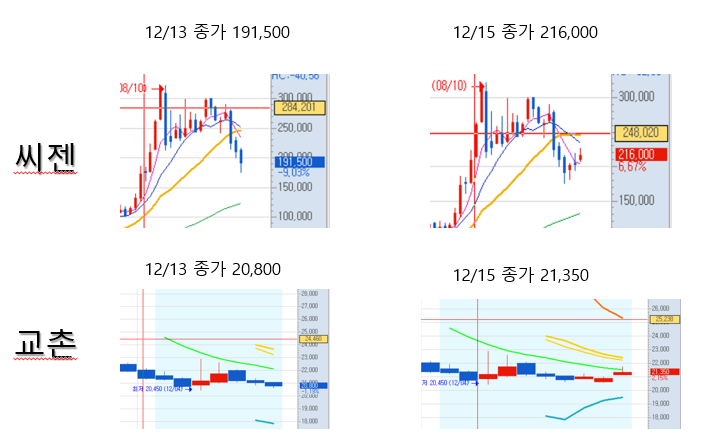

1. 주식
현재 신재혁은 제이앤티씨, 덕산네오룩스에 씨게 물려 있으며, 손해를 보지 않고 탈출하기 전까지는 별도의 종목을 매수하지 않을 예정으로 알려져 있다. 최근 2020.12.13 즈음 지인들과의 디스코드에서 씨젠, 교촌에프앤비의 소폭 상승을 예견했지만, 보유한 총알이 없어서 사지 못하고 상승을 지켜보기만 해서 매우 슬퍼하고 있는 듯하다.
참고자료1) 신재혁이 매수하지 않았던 종목들의 매서운 상승세
2. 게임
주로 관심을 가지고 플레이하는 장르는 RPG, 생존물 등이고 친구들과 함께 플레이할 수 있는 4인 이상의 게임을 선호하는 것으로 알려져 있다. 최근 플레이했던 게임으로는 식인종들이 있는 섬에서 생존, 탈출하는 The Forest, 펄어비스에서 제작한 국산 대작 MMORPG인 검은 사막, 인디게임이지만 큰 흥행을 거두고 꾸준히 마니아층의 사랑을 받는 꿈도 희망도 없는 생존게임 Don't Starve 등이 있다.
차기 플레이 예정 게임으로는 1월달에 3.13 시즌이 출시될 POE(Path of Exile), 2021년 하반기 출시 예정인 붉은 사막 등을 꼽았던 것으로 알려져 있다. 적절한 할인만 받쳐 준다면, 이미 번역이 된 것으로 알려진 발더스게이트3 또한 관심목록에 있다고 한다.